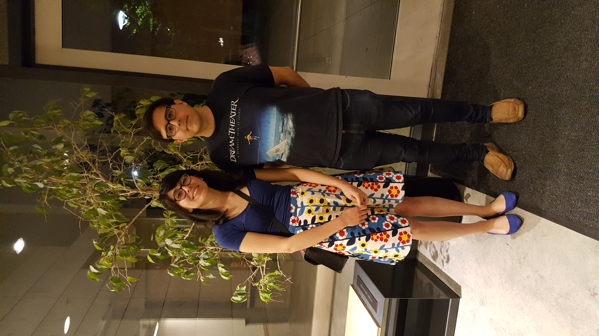
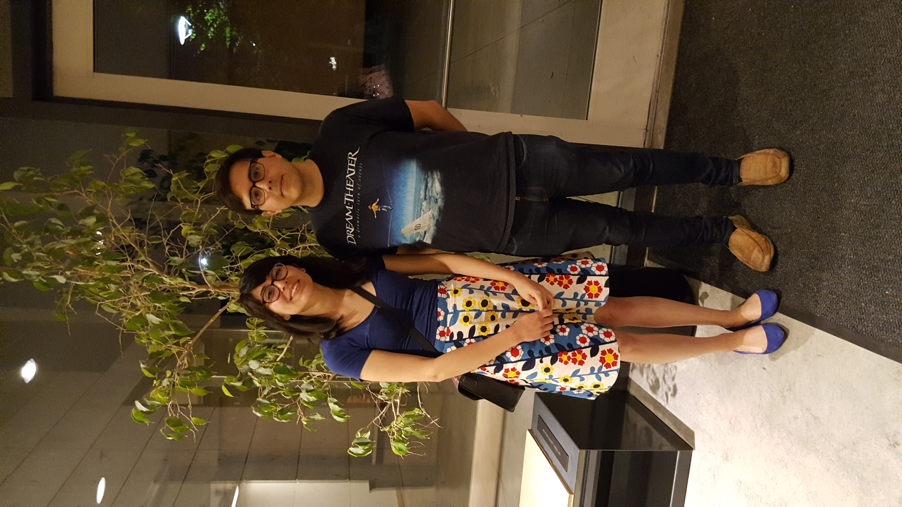
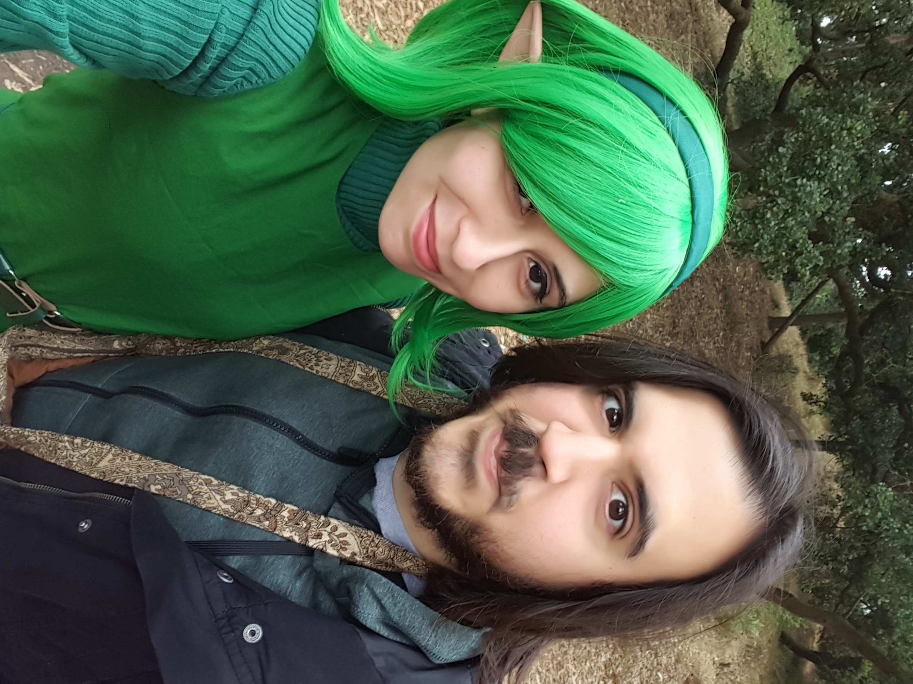
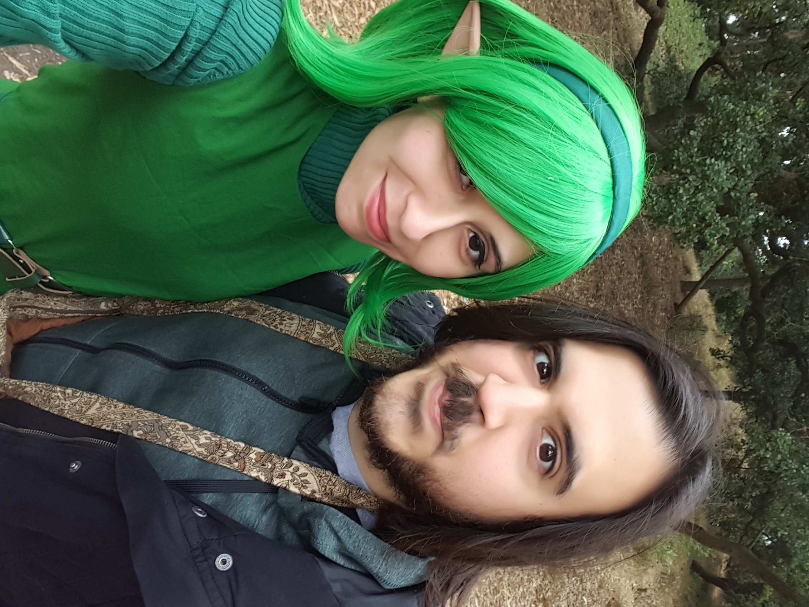
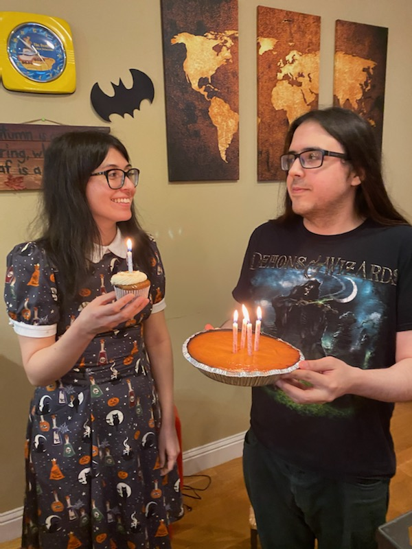
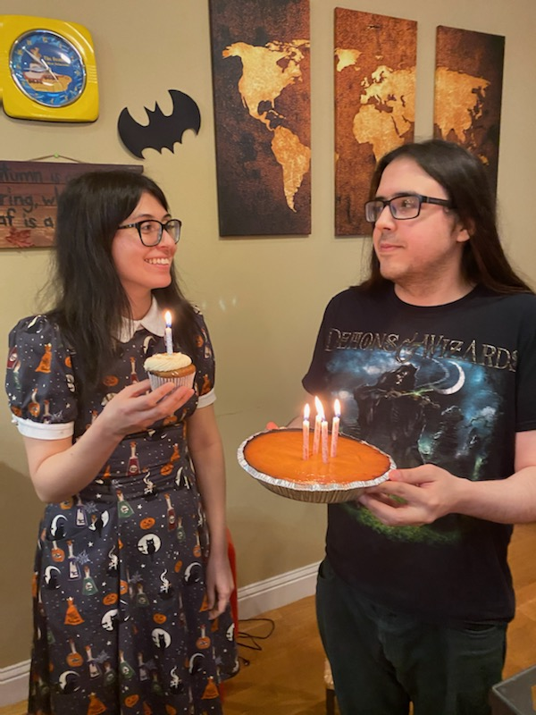

Our Story

How We Met
Back in 2015, Aries was invited to karaoke by our mutual friend Katie. Even though she was already in pjs, she agreed to go out! They went to Pop's Bar in the Mission where Roger Niner Karaoke was hosting. Of course, Alberto was already there and sitting by the bar. Aries noticed him and his peacoat right away. After being introduced to each other, they hit it off right away talking about their mutual love of power metal. They spent the night name dropping bands and Alberto sang some Sonata Arctica. After karaoke, Alberto was going to go eat a burrito, but Aries invited him over to play Mario Kart instead.

First Date
The saga continues with their first date. After a night of karaoke and Mario Kart, Alberto asked Aries out for dinner the following week. They went to Marnee Thai in the Outer Sunset, where they learned that they both love spicy food. That night ended with plans for another date and a first kiss.
The Proposal
San Francisco has played a huge role in our relationship and we knew that we wanted it to have a part in our engagement. After a summer apart in 2022, Aries and Alberto made plans to go back to San Francisco. They went to the Ferry Building for a croissant and for a walk along the Embarcadero where they sat on a bench by Cupid's Span. Alberto pulled out a ring and asked Aries to marry him. It was a quiet and perfect proposal.
Photo Gallery
 

 

 
